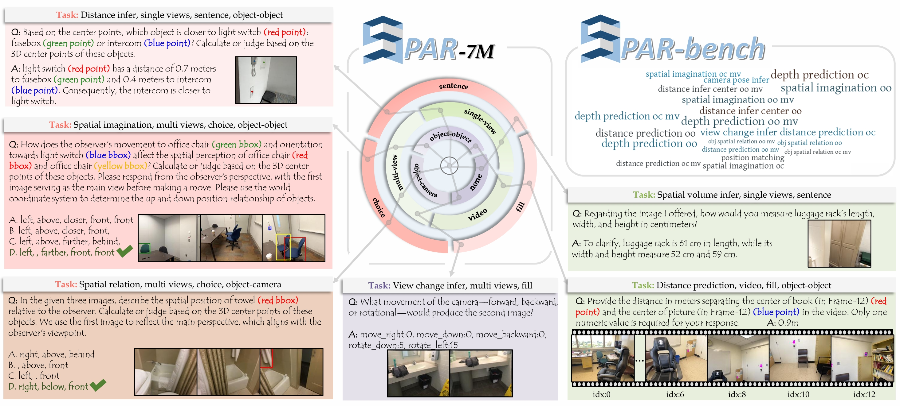

📄 Paper Summary
Recent advances in vision-language models (VLMs) have greatly improved multimodal understanding, but spatial perception remains a major limitation — especially in complex 3D scenes. To address this, we introduce SPAR-7M, a large-scale dataset built from 3D scenes using a novel 2D annotation pipeline. It covers 33 spatial tasks ranging from perception (e.g., depth, distance) to reasoning (e.g., imagination, object relations) across single-view, multi-view, and video settings.
We further construct SPAR-Bench, a high-quality benchmark of 7,207 human-verified QA pairs across 20 representative spatial tasks, supporting diverse input modalities. Experiments show that pretraining on SPAR-7M significantly improves model performance on spatial benchmarks, even without explicit 3D representations — revealing the strong potential of 2D-supervised spatial learning.
📦 SPAR-7M & SPAR-Bench
SPAR is a comprehensive spatial QA suite composed of two components: SPAR-7M — a large-scale synthetic dataset for training, and SPAR-Bench — a human-curated benchmark for evaluation. Together, they cover a wide spectrum of 3D spatial understanding tasks across various cognitive levels and modalities.
📚 SPAR-7M
- ✅ 7M+ QA pairs
- 🧠 33 spatial task types
- 🖼️ Input: single-view / multi-view / video
- 📐 Tasks: depth, distance, matching, imagination...
- 🏗️ From 4,500 richly annotated 3D scenes
🧪 SPAR-Bench
- 📏 7,207 QA samples
- 👀 Manually verified high-quality questions
- 🧩 20 representative task types
- 🎯 Zero-shot benchmark for VLMs
- 🚀 Evaluates perception, cross-view & reasoning
📊 Task Type Distribution in SPAR
This figure summarizes the distribution of all 33 spatial tasks in SPAR,
categorized by cognitive level (Low / Medium / High),
input modality (single-view / multi-view / video), and task type.
Notably, 51% of SPAR tasks fall into high-level spatial reasoning,
indicating a strong focus on compositional and cognitively demanding skills.
🔍 SPAR-7M & SPAR-Bench Visualization
This figure illustrates representative examples from SPAR-7M and SPAR-Bench. It showcases the diversity of spatial tasks across input modalities (single-view, multi-view, video), cognitive levels (perception to reasoning), and answer formats (sentence, choice, fill-in). These examples reflect the broad coverage and structured design of our dataset and benchmark.
🕵️ Explore SPAR-Bench Tasks
This interactive viewer showcases representative samples from the 20 spatial tasks in SPAR-Bench.
Each example illustrates different cognitive levels, input modalities, and relation types.
Note that SPAR-Bench only contains multiple-choice and fill-in-the-blank questions.
For open-ended or descriptive sentence-based tasks, please refer to the
SPAR-7M dataset on Hugging Face.
🎯 Benchmark Evaluation
SPAR-Bench evaluates 20 spatial tasks across three cognitive levels — perception, cross-view understanding, and high-level reasoning. It contains 7,207 human-verified QA pairs across diverse modalities.
| Model | Avg (%) ↑ | Low ↑ | Medium ↑ | High ↑ |
|---|---|---|---|---|
| 🟤 Baselines | ||||
| Random | 32.74 | 31.19 | 38.25 | 32.29 |
| Human | 67.27 | 55.31 | 72.32 | 76.22 |
| 🟦 API Models | ||||
| GPT-4o | 36.39 | 29.25 | 24.93 | 45.11 |
| Claude-3.7-Sonnet | 21.77 | 25.43 | 7.33 | 23.33 |
| Qwen2-VL-72B | 35.62 | 35.28 | 23.39 | 40.00 |
| Qwen2.5-VL-72B | 39.40 | 35.35 | 23.05 | 48.44 |
| 🟨 Open-source Models | ||||
| InternVL2-8B | 33.02 | 26.83 | 36.49 | 37.47 |
| InternVL2.5-8B | 36.28 | 29.46 | 31.88 | 43.80 |
| LLaVA-OV-7B | 31.20 | 21.79 | 26.13 | 40.14 |
| Qwen2-VL-7b | 30.74 | 27.52 | 20.44 | 37.03 |
| Qwen2.5-VL-7b | 33.07 | 28.75 | 22.97 | 40.27 |
| LLaVA-v1.5-7b | 23.65 | 10.85 | 27.50 | 34.09 |
| LLaVA-v1.6-7b | 13.21 | 8.53 | 4.79 | 20.18 |
| 🟥 Fine-tuned | ||||
| InternVL2.5-8B + SPAR-mix | 63.25 | 65.53 | 63.01 | 60.19 |
⚠️ Note: We typically exclude fine-tuned models (like InternVL2.5-8B + SPAR-mix) from direct comparison, as they are trained on SPAR-7M and thus not evaluated in a zero-shot setting.
Avgis the mean accuracy across all 20 tasks in SPAR-Bench.Low,Medium, andHighare means over task subsets (not equal count).- So
Avg≠ average of Low / Medium / High. - Only a subset of models are shown — see our paper for complete results.
🏗️ Dataset Construction
Overview of our data construction pipeline. It consists of three main stages.
- Scene Pre-processing: We sample keyframes from raw video and extract 3D metadata such as depth, camera pose, and object bounding boxes.
- Scene Structuring: All frames, objects, and camera metadata are stored in a unified database format. This enables flexible multi-view and spatial queries for QA generation.
- Multi-task QA Generation: We design task-specific templates and automatically fill in questions and answers by selecting tasks, object types, image views, and answer formats. This enables systematic generation of 33 spatial QA types.
🧭 3D Grounding Module
We propose a novel 3D grounding module that integrates seamlessly with Vision-Language Models (VLMs),
enabling precise spatial localization from both video and multi-view inputs.
For video inputs, grounding is transformed into a frame selection task, followed by mono-frame 3D localization
via predicted UV coordinates, depth, and size. In multi-view settings, the object is localized in a selected frame
and then back-projected to recover its full 3D bounding box.
An optional refinement stage further improves accuracy by matching the predicted box against
the scene’s proposal boxes based on geometric similarity.
🌍 Generalization Across Benchmarks
We evaluate how pretraining with SPAR-mix affects generalization on various
spatial understanding and 2D vision-language benchmarks.
The Base VLM is InternVL2.5-8B, trained with high-quality proprietary data.
To ensure a fair comparison, we introduce:
- +EMOVA-2M: trained on 2M samples randomly selected from the EMOVA 2D dataset.
- +SPAR-mix: trained on 2M samples with 60% from SPAR-7M and 40% from EMOVA.
Bold values indicate best performance among the two open-source variants (EMOVA vs SPAR-mix).
| Method | VSI-Bench | CV-Bench 2D | CV-Bench 3D | BLINK | 3DSRBench | Seed-Image | MME | MMBench | RealWorldQA | TextVQA |
|---|---|---|---|---|---|---|---|---|---|---|
| GPT-4v | – | 64.3 | 73.8 | 51.14 | – | 71.6 | 1927 | 75.0 | 61.4 | 77.4 |
| GPT-4o | 34.0 | – | – | 60.04 | 45.3 | 77.1 | 2310 | 83.4 | 75.4 | – |
| Cambrian-8B | – | 72.3 | 72.0 | – | – | 74.7 | 1547 | 75.9 | 64.2 | 77.8 |
| LLaVA-OV-7B | 25.3 | – | – | 48.2 | 44.1 | – | 1998 | 80.8 | 66.3 | – |
| InternVL2-8B | 34.6 | – | – | – | – | 75.4 | 2215 | 81.7 | – | 77.4 |
| Base VLM | 32.4 | 74.20 | 78.50 | 46.61 | 58.33 | 76.53 | 2323 | 84.45 | 66.67 | 68.73 |
| +EMOVA-2M | 24.5 | 66.27 | 64.83 | 42.40 | 55.25 | 73.8 | 2186 | 80.24 | 63.14 | 63.78 |
| +SPAR-mix | 41.1 | 72.25 | 89.08 | 43.92 | 57.48 | 73.2 | 2163 | 79.90 | 64.71 | 62.91 |
While the Base VLM is pretrained on high-quality proprietary data and achieves strong performance,
we introduce +EMOVA-2M as a fair open-source baseline for comparison.
Under equal data scale (2M), our proposed +SPAR-mix significantly improves performance over EMOVA-only training on spatial benchmarks (e.g., VSI-Bench, CV-Bench 3D), demonstrating the value of our spatial QA data.
🛰️ Evaluation on 3DQA and 3D Grounding
💬 3D Question Answering
Performance on SQA3D (EM@1) and ScanQA (BLEU-4, CiDEr)
| Method | EM@1 | BLEU-4 | CiDEr |
|---|---|---|---|
| 3D-LLM | – | 12.0 | 69.4 |
| Chat-3D v2 | 54.7 | 14.0 | 87.6 |
| LEO | 50.0 | 13.2 | 101.4 |
| LL3DA | – | 13.5 | 76.8 |
| Scene-LLM | 54.2 | 12.0 | 80.0 |
| SPAR-mix | 58.1 | 15.3 | 90.7 |
📡 3D Grounding (ScanRefer)
Accuracy@0.25 and @0.5. Values in brackets are without refinement.
| Method | Acc@0.25 | Acc@0.5 |
|---|---|---|
| ScanRefer | 37.3 | 24.3 |
| MVT | 40.8 | 33.3 |
| ViL3DRel | 47.9 | 37.7 |
| 3D-LLM | 30.3 | – |
| Chat-3D v2 | 35.9 | 30.4 |
| Grounded 3D-LLM | 47.9 | 44.1 |
| SPAR-mix | 48.8 (31.9) | 43.1 (12.4) |
📚 Bibtex
If you find our work helpful, please consider citing us:
@article{zhang2025from,
title={From Flatland to Space: Teaching Vision-Language Models to Perceive and Reason in 3D},
author={Zhang, Jiahui and Chen, Yurui and Zhou, Yanpeng and Xu, Yueming and Huang, Ze and Mei, Jilin and Chen, Junhui and Yuan, Yujie and Cai, Xinyue and Huang, Guowei and Quan, Xingyue and Xu, Hang and Zhang, Li},
year={2025},
journal={arXiv preprint arXiv:xx},
}